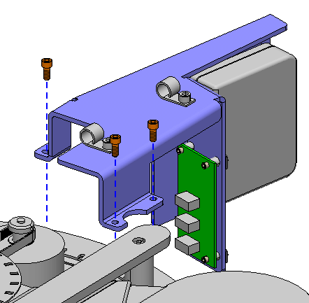
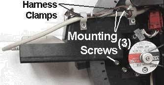
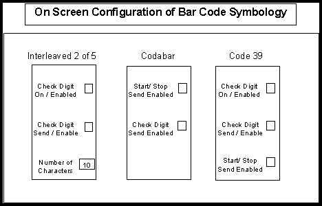

This procedure describes how to install the internal bar code reader in Access 2 instruments.
Required Materials
Installation of the bar code reader requires these tools and supplies:
Small slotted screwdriver
Hex wrench set
Paper towels or disposable diaper
13-mm Sample Tray
2.0-mL Sample Cup
Two 13X100-mm Test Tubes
Two customer bar code labels for verifying bar code reader operation. If not available, a sample tray can be used.

Remove the sample and reagent carousels module and drain any condensation before disassembling.
Remove all sample trays and reagent packs from the module. Store all removed reagent packs in the refrigerator.
Power down the instrument.
Disconnect the cables and wires from the sample/reagent module interface PCB.
Remove the two screws securing the carousel module to the base, and carefully slide the module out of the instrument.
Remove the screws attaching the reagent carousel top insulation cover.
Invert the module over a sink to drain excess condensation.
Note: Moisture is often inside the carousel and must be removed before inverting the module.
Place the carousel module upside down on a solid work area.
Remove the bar code reader and bracket.
Unplug the internal bar code reader from the sample/reagent module interface PCB.
Unplug the interface cable from the cup/tube sensor PCB.
Remove the bar code reader bracket from the module (three screws).

Install the new bar code reader bracket.
Install the new bar code reader and bracket using the mounting screws provided.
Route the cables, and then plug in the bar code reader and cup/tube sensor PCB cables.
Reassemble the sample and reagent carousels module.
Place the module upright.
Replace the reagent carousel reagent pack tray.
Reinstall the reagent carousel top insulation cover.
Slide the module into the instrument far enough to allow connection of J1-ribbon cable, J16-temp cable, and J18-power cable.
Position the module so that the sample carousel rotates freely while gaining access to the cup /tube detector PCB.
Power on the instrument.
Note: To save time, do not allow the system to initialize.
Configure the bar code reader.
Caution: Regarding the use of Codabar without check digit on Access and Access 2 instruments:
Beckman Coulter no longer supports or advises using Codabar without check digit bar code labels.
The bar code reader cannot be programmed to read Codabar without check digit in Base Access instruments with V3.27 software or in Access 2 instruments.
If Codabar is the symbology used by a customer, then encourage the customer to switch to a different code.
Figure 97: On-screen configuration options and general screen layout

Determine the symbology of the bar code labels in use at the customer site (tray and sample labels).
Note: If the only bar code symbology is code 128, then it is not necessary to perform any of these steps to program that code because the bar code reader will read code 128 always. It cannot be activated or deactivated.
Enter the bar code screen that allows setup from the user interface. The configuration screen for Access and Access2 instruments is similar, and both contain the same options.
Select the options that program the bar code reader to read the customer tray and sample labels.
Note: Only one selection can be made in each category. In some cases, it may be necessary to switch sample tray labels to another type. Both Interleaved 2 of 5 and Code 128 tray labels are available.
If programming the reader for Interleaved 2 of 5 labels, then set the number of characters in the bottom box in that section.
Note: The allowable number of characters that can be entered is 4 through 15.
Exit the bar code configuration screen.
Note: It is not necessary to reboot the instrument for the changes to take effect.
Align the sample carousel to the bar code reader and cup/tube reader.